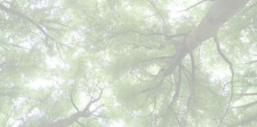

Roots and Wings

Discovering Our Inner Self
Life is a continuous journey in search of our true selves. Do our roots define us, or are we merely embedded in the surrounding mass shaping us while still having the ability to change our lives? Simone de Beauvoir once said, "One is not born but rather becomes a woman." This is a profound thought that applies not just to women, but to every living creature. As human beings, we can reflect and change our pathways. Ultimately, we are meant to change; that is the essence of evolution. As an immigrant, I had to let go of some aspects of my cultural background to fit into my new environment. I was also curious about this different world. However, immigration has helped me look deeper into myself and discover who I truly am. The discovery is very simple, I am the human being first. The definition of state became fluid for me, it doesn't mean I deny where I was born, but rather it doesn't define me or anyone else unless that is their choice.
My homeland is the forest, a place where I have spent a lot of time with my family. The smell of pine, the songs of birds, and walking on soft moss always make me feel grounded, no matter where I am in the world. I also feel a strong nostalgia for the regional food from my upbringing, and I am still quite confident when speaking my native language however my background does not define my way of seeing the world. I have a deep curiosity for the unknown, and I refuse to limit myself to society's expectations. It's not worth sacrificing our true selves to fit someone else's mold. Living away from my homeland has given me the freedom to define who I am. Although this has been an ongoing process and it has been a truly beautiful experience. As I navigate my middle age, I've reached a point where I consciously choose what I take pride in and what my priorities are. I'm not suggesting that there is a right or wrong way to live; rather, I believe that a different perspective might help us make decisions about what is truly good for us.